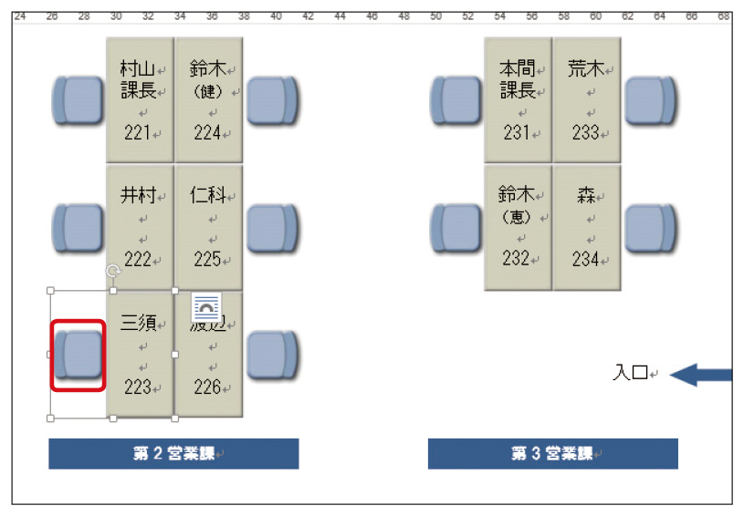
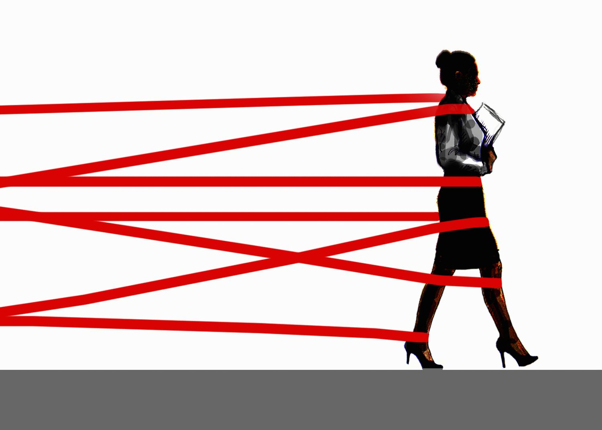
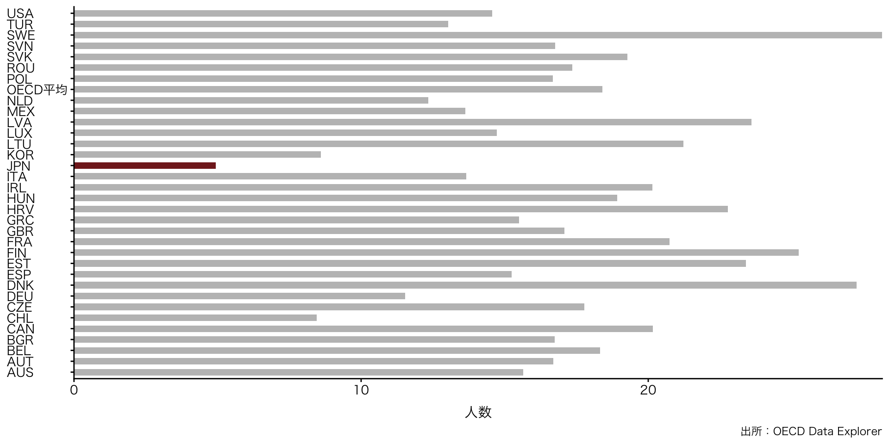

政治学概論Ⅰ《2025》
#10 行政と政官関係（1）：官僚制
![]()
February 4, 2026
KEYWORDS
- 官僚制；階統制；レッド・テープ；最大動員モデル
Ⅰ. 官僚制
『公共』（東京書籍）
- （単元）内閣のしくみと役割
- 内閣の役割と行政組織
- 行政改革；「1府12省庁」；公務員（官僚）：副大臣；大臣政務官
- 行政国家化と行政改革
- 行政国家；官僚制；「天下り」；国家公務員倫理法
- Cf. ウェーバー：合法的支配；形式合理性
- 内閣の役割と行政組織
官僚制の定義と語源
定義
- 政策を立案・執行する主体
- 官僚制という制度的特徴をもつ（後述）
国家主権に基づく中央政府と地方政府による統治行為の一部としての官僚制の集団作業（村松 (1994)）
官僚制の定義と語源
語源
- 官僚制の語源
- beaurocracy
- bureau（「机」の意から転じて「オフィス」を指す）
- 接尾辞 cracy（支配）
- 当初の語感「机が支配」する（揶揄として生まれた言葉）だが、のちに、中立的な語彙として用いられるようになる
- Cf.アリスト/クラシー（優秀者/支配）；デモス/クラシー（民衆/支配）
- 選挙によって選ばれた者ではない者による支配
- beaurocracy
官僚制の特徴
- 社会学者によって特徴が分析される
- ウェーバー：官僚制の必要不可欠性とその特徴（合理性）
- マートン：官僚制の逆機能
官僚制の特徴
組織的特徴
- 階統制
- 指揮命令系統の一元化
- 権限の分割
- 服従義務の範囲の限定
- 決まっていることを決められた通りにこなす
- セクショナリズム（部局割拠主義）
- Cf. 大部屋主義（日本の特徴）
- 専門領域による任用
- 公務員試験：教養試験＋専門試験（法律・技術など）
官僚制の特徴
大部屋主義
- 出典：マイナビ座席表テンプレートを編集するには
官僚制の特徴
業務的特徴と合理性の追求
- 合理性にもとづく効率的な業務遂行
- 数値による把握と統制
- Cf. 古川貞二郎（元内閣官房副長官）官僚の心得
- 「数字の向こう側に人を見る能力」
- 数値による把握と統制
官僚制の特徴
経済思想史家 ミュラー『測りすぎ』
私たちは測定された説明責任の時代、測定された実績に対する報酬の時代に生きており、「透明性」を通じてそれらの測定基準を公表するという美徳を信じている。だが、説明責任を測定基準や透明性と同一視するのは間違っている。説明責任は本来、自分の行為に責任を負うという意味のはずだ。だが、一種の言語的トリックによって、説明責任は標準化された測定を通じて成功を見せつけることに変わっていった。まるで、本当に大事なのは測定できるものだけだとでもいうようだ。しばしば当然のことのように受け止められるもう一つの思い込みが、「説明責任」は実績の測定が公にされること、つまり「透明化」を求めるということ（ミュラー，ジェリー・Z and 松本裕（訳） (2019, p. 4)）。
官僚制の特徴
経済思想史家 ミュラー『測りすぎ』
定量化とは魅力的なものだ。知識を整理して、単純化してくれるからだ。人や組織間で簡単に比較できる数値情報を提供してくれる。だが、この単純化はゆがみにつながる可能性がある。何かを比較可能にするというのは往々にして本来の概念、歴史、意味をはぎとってしまうことを意味するからだ。その結果、情報は問題の現実よりも確実で権威あるもののように見える。危険信号や曖昧さ、不確定要素ははぎとられる。特定の知識の体裁を整えるには、数値で表現するのが一番だ（ミュラー，ジェリー・Z and 松本裕（訳） (2019, p. 25)）。
「学力格差に関して言えば、目に見える結果の進歩がない場合、継続的な測定に費やされるリソースそのものが、道徳的な熱意のあらわれとなるのだ（ミュラー，ジェリー・Z and 松本裕（訳） (2019, p. 100)）｡
官僚制の特徴
政治学者 重田園江「統計」
「アマチュアは公表し、官僚は隠匿する」。イアン・ハッキング『偶然を飼いならす』（木鐸社、４８６０円）のこの言い回しは、王の寵臣（ちょうしん）たちが集まる秘密の場所＝官房における国家機密と、データをかき集めて推計するアマチュアの知の双方が、近代統計学の源泉となったことを鮮やかに描いている（重田 (2019)）。
なぜ統計はこんなにも普及したのか。背景には、日常生活と「国民国家」規模の状況の乖離（かいり）がある。たとえば、日本の景気が前よりいいのか悪いのか、職を得られない人が増えたのか減ったのか、簡単にはわからない。そこで統計データの出番となる。ポーター『数値と客観性』が指摘するとおり、統計は、体感される現実を数値に置き換え「客観化」していく。人びとは数値が実感に合わないと違和感を抱く一方で、数値という根拠にすがって生きている（重田 (2019)）。
官僚制の特徴
政治学者 重田園江「統計」
ただ、現在よく知られた統計指標の中には、案外新しいものも多い。竹内啓『歴史と統計学』によるなら、経済政策と統計が結びついたのは、「大衆の時代」である２０世紀になってからである。とりわけ、大恐慌による大量失業に取り組むため、数値による政策の裏づけが求められた（ただし、アメリカで月ごとの雇用統計が取られようになるのは１９４０年である）。これ以降、失業率やＧＤＰといった指標が生まれ、政策とその成果をアピールするのに用いられるようになる。他方で、何をＧＤＰに含めるかに定説はなく、統計的指標は社会文化的に移ろいゆくものともいえる（重田 (2019)）。
レッド・テープと官僚制の逆機能
- レッド・テープ
- 無用な諸規則で人を束縛するというイメージ
- 繁文縟礼はんぶんじょくれい
- 揶揄的な意味での「お役所仕事」
お役所風の形式主義。過度に形式上の手続きを尊重すること。官僚主義。お役所仕事。〔イギリスで赤いテープを使って公文書を縛ったことから〕（『大辞林』）

レッド・テープと官僚制の逆機能
官僚制の逆機能
- 杓子定規
- 煩雑な手続きゆえに、非効率
- 実質合理性の軽視；形式合理性
ブルシットジョブ（デヴィッド・グレーバー）
- 仕事のための仕事；働いている気になるだけの仕事
- やってる感・頑張っている感
- 点検・評価という名のペーパーワーク（の押し付け）
- 官僚：「高所」からのPowerPointづくり
- 現場：募る負担・負担感
レッド・テープと官僚制の逆機能：ブルシットジョブ
例（文部科学省）
- 教員勤務実態調査
- 令和6年度教育委員会における学校の働き方改革のための取組状況調査結果
- 「学校の業務だが、必ずしも教師が担う必要のない業務」：調査・統計等への回答等
- 「教師の業務だが、負担軽減が可能な業務」：進路指導（事務職員や外部人材との連携・協力等）；学習評価や成績処理（補助的業務へのサポートスタッフの参画等）
- 教師を取り巻く環境整備について緊急的に取り組むべき施策（提言）
レッド・テープと官僚制の逆機能：ブルシットジョブ
例（教育委員会）
リーディングアサインメント：「「無駄な仕事」新自由主義の弊害…」
効率化とは名ばかりで、無駄で非合理的なBSJが至る所にあふれる結果となった。（2ページ目）
新自由主義が効率化を掲げながら実際には無駄な仕事が増えた点が重要だと感じた。競争や管理の強化が重視される体制の中では管理や書類の作成などの作業が多くなり、やりがいを感じない人が多く出てくる。効率化を重視した改革が無意味な仕事が多くなった、このことからAIがどれだけ優秀で効率であっても結局最後は人である私たちや制度が変わらなければ何も進歩しないのではないかと感じた（安達さん）。
リーディングアサインメント：「「無駄な仕事」新自由主義の弊害…」
p2 ブルシット・ジョブは、仕事の中身より「働いている時間」を重視する価値観や、管理・官僚主義の強化によって生み出されていると述べられている。
無駄な仕事が生まれる背景を、個人の能力や努力不足ではなく、社会全体の価値観や制度の問題として捉えている点が重要だと感じた。仕事の中身よりも「働いている状態」や管理を重視する考え方が、意味の薄い業務を増やしているという指摘は、多くの人が抱える働きづらさの原因を明確にしている。また、労働の在り方を見直し、本当に必要な仕事とは何かを考えるきっかけを与えてくれる点でも意義がある（山田さん）。
制約された合理性（ハーバート・サイモン）
- 経営的（アドミニストレイティブ）人間
- 人間は制約された合理性しかもたず、不完全な意思決定しかできない
- Cf. 経済的人間
- 「全知的な」合理性をもつ人間を前提とする
- ➡ 多くの場合、予測が外れ、「想定外」と評する
制約された合理性（ハーバート・サイモン）
- 意思決定を行なう際、目的を可能な限り効果的かつ効率的に達成しようと心がける
- 決定の「過程」において、知識、情報、予測能力の限界など、合理性が制約されているために、その意図を完全に実現することはできない
- したがって、その「結果」は不完全である
- したがって、どこで「満足」するか（どこで諦めるか）を問う方が重要である
- ➡ 不完全性を克服するために、権限の分割を試みる
- 決定範囲を狭めることにより、合理性を高める
真渕勝「公共的人間」（真渕勝）
官僚は政策エリートの一つである。官僚が「頭が良い」と言われる理由はいくつかあるが、その最たるものは一見、もっともらしい理由をたちどころに思いつく能力にある（真渕 (2012, p. 22)）
Ⅱ. 日本の官僚制
法律上の公務員の位置づけ
- 国家公務員法第96条
- 国民全体の奉仕者
- 公共の利益のために勤務
- 特定の政党・党派のための奉仕者ではないことを含意
すべて職員は、国民全体の奉仕者として、公共の利益のために勤務し、且つ、職務の遂行に当つては、全力を挙げてこれに専念しなければならない。
前項に規定する根本基準の実施に関し必要な事項は、この法律又は国家公務員倫理法に定めるものを除いては、人事院規則でこれを定める。
キャリア官僚とノンキャリア官僚
- キャリア官僚：全公務員の5%
- 政策立案の主体：ジェネラリスト（頻繁な異動あり）
- ➡︎ 国会答弁や国会議員とのネットワークを重視
- Cf. 国会答弁（ペーパーは官僚が用意）：（「霞が関文学」例「検討を加速します」; 逃げ道としての「等」の多用）
- ノンキャリア官僚
- ロジスティック；スペシャリスト（頻繁な異動なし）
- ➡︎ 技術知・専門知の蓄積
「役人学三則」：末弘厳太郎（いずたろう）
- いやしくも役人として出世せんとする以上、いかに相手の言うことが条理にかなっていても容易にその前に頭を下げてはいけない。法規を盾に形式的な理屈で押し通し、相手をねじ伏せよ
- およそ役人たらんとする者は法規を楯にとりて形式的理屈をいう技術を習得することを要す
- およそ役人たらんとする者は平素より縄張り根性の涵養に努むることを要す
最大動員モデル
最大動員モデル（村松岐夫）
- 前提：国際的に見て圧倒的に少ない公務員数
- Q. 少ない公務員でどう行政サービスを提供、維持するか
- A. 最大動員モデル
- 「目標による能率志向の管理」（村松 (1994)）
- 人的、財政的、その他のリソースを利用する仕組み
行政を支える人数の国際比較：人口1000人あたりの一般政府雇用
最大動員モデル
人事ローテーション
- 補職：「人材」として採用し、必要に応じていろいろな部署に配属
- ジェネラリスト＞スペシャリスト
- ➡ 大過なく、如才なく奉職することが求められる
- 事務次官をゴールとする出世スゴロク
- キャリアパス研究「誰が幹部になるのか?」（竹本 (2011)）
最大動員モデル
「おそい昇進システム」（稲継裕昭）
- 長期間に渡って行われる厳しい昇進競争
- 20年近くほとんど昇進ペースに差がつかない
- 昇進管理において省員への「動機づけ」を重視
- 技能への投資を一層促す
- 中央省庁における個々の政策判断は、課長
- 近年は課長補佐レベルで為されることが多い
教育行政
文部科学省 初等中等教育局
- 初等中等教育局長 望月禎
- 初等中等教育企画課長 黄地吉隆
- 教育課程課長 武藤久慶
- 教科書課長 後藤教至
- 学校情報基盤・教材課長 寺島史朗
- 参事官（高等学校担当）橋田裕
財務省 主計局
- 主計官（文部科学係担当）河本光博
教育行政：初等中等教育局長
望月禎（Wikipedia）
- 静岡県生まれ。1991年（平成3年）、早稲田大学政治経済学部を卒業。同年、文部省に入省。岐阜県教育委員会や経済協力開発機構（OECD）などを経て、OECD日本政府代表部一等書記官、文科省初等中等教育局児童生徒課生徒指導室長、文部科学大臣秘書官、初等中等教育局教科書課長、同局教育課程課長、同局初等中等教育企画課長、文部科学省大臣官房総務課長、同人事課長など歴任。
- 2022年（令和4年）9月1日、文部科学省大臣官房長に就任。
- 2023年（令和5年）8月8日、総合教育政策局長に就任。
- 2024年（令和6年）7月11日、初等中等教育局長に就任。中央教育審議会答申を踏まえた学校における働き方改革、学校の指導・運用体制強化、教師の処遇改善のほか、GIGAスクール構想の推進、学校の通信ネットワーク改善、校務のDX化などに取り組んだ。
教育行政：初等中等教育局長
教育家庭新聞（2025年1月1日）
子供の学びを支える教師は公教育の要であり、子供たちへのよりよい教育の実現のため、教師を取り巻く環境整備を進めることが喫緊の課題です。昨年8月の中央教育審議会答申を踏まえ、学校における働き方改革の更なる加速化、学校の指導・運営体制の充実、教師の処遇改善の一体的・総合的た推進など、学校や自治体の皆様と連携しながら、先頭に立って取り組んで参ります。
今後は、端末活用頻度の向上と地域間格差の解消、学校の通信ネットワーク改善、校務のDX化、確実な端末更新などに取り組み、GIGAスクール構想第2期を強力に推進して参ります。このほか、学習指導要領の改訂に向けた検討を始めるとともに、幼児教育の質の向上、特別支援教育の推進、教科書の充実、健康教育及び食育の振興、新時代に対応した高等学校改革の推進などに全力で取り組んで参ります。
教育行政：主計官（文部科学係担当）
河本光博（Wikipedia）
1998年 一橋大学経済学部卒業。武隈慎一ゼミ出身。同年大蔵省入省。証券局総務課配属
- 2015年7月：財務省主計局主計官補佐（文部科学第一、二係主査）
- 2022年7月：主税局調査課長
- 2023年7月：主税局税制第三課長
- 2024年7月：主計局主計官（文部科学係担当）
教育行政：主計官（文部科学係担当）
日経ビジネス（2025年6月18日）
- 「教員給与「上乗せ分」増額と働き方改革 半世紀ぶり法改正の舞台裏」
しかし、そこから50年以上がたち、先生の仕事を巡る環境は大きく変化しています。児童・生徒の問題は多様化・複雑化し、親の権利意識も高くなっていますし、夏休みも研修や部活でほとんど休めなくなっています。業務の負担感が大きすぎる状況になっているのです。そうした中で、教員の方々の残業時間も小中の平均で47時間となっていて、過労死寸前の方もいる状況になり、どんどん教員志望者が少なくなっていく、いわゆる「教師不足」が大きな問題となっていました。そこで、教職員の方々の業務の見直しや、それに見合った手当の増額が課題となっていたわけです。
教育行政：主計官（文部科学係担当）：日経ビジネス
文科省は2019年に「3分類」を設定し、教師がやるべき業務やそうでないものについて方針を出しています。これを見ていただけると、実際の進捗は良くないです。その原因の一つとして自分が考えるのは、「基本的には」や「必ずしも」という留保の言葉が付いているため、日々子供や保護者と向き合う現場ではなかなかその通りの運用ができないという問題があるのではないかという点です。
例えば、英国では、1998年にトニー・ブレア首相の労働党政権が出した教育現場への通知があります。それまでの英国は教師がかなり福祉的な業務をやっていたのですが、教師が「担うべきではない仕事」という留保なしのネガティブリストを出して、事務職員に業務を移し、結果的に英国の教師は事務負担からかなり解放されたという事例があります。このように明確に、国がトップダウンで強制力を持った仕事のより分けをするのも一案であると考えました。